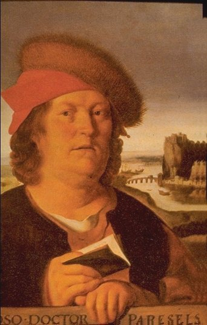
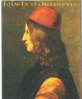
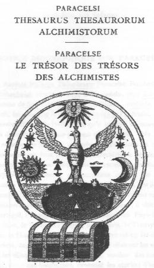

LE TRÉSOR DES TRÉSORS DES ALCHIMISTES PAR
PHILIPPE THÉOPHRASTE BOMBAST, LE GRAND PARACELSE
revu le 28 mars 2004Plan : introduction - 1. notice biographique sur Paracelse - oeuvres complètes - traités d'alchimie - 2. Paracelse et l'alchimie au XVIe siècle - 3. l'univers alchimique de Paracelse - 4. le Trésor des Trésors [du Soufre du Cinabre - du Lion rouge - du Lion vert]
1. NOTICE BIOGRAPHIQUE SUR PARACELSE
Auréole Philippe Théophraste Paracelse Bombast ab Hohenheim, naquit en1493 à Einsiedeln, près Zurich, canton de Schwytz. Son père Guillaume, médecin instruit, lui enseigna le latin, la médecine et l'alchimie. Les oeuvres d'Isaac le Hollandais, qu'il lut dans sa jeunesse, lui donnèrent un amour profond de l'alchimie. Dès lors il ne séparera jamais la médecine de l'alchimie et c'est l'union de ces deux sciences qui caractérisera l'école des paracelsistes. Son père l'envoya terminer ses études auprès de Trithème ; cet occultiste célèbre eut une grande influence sur les idées de Paracelse, car il lui enseigna la magie et l'astrologie. Trithème s'étant retiré dans un couvent, Paracelse se mit à voyager : il visita le Portugal, l'Espagne, l'Italie, la France, les Pays-Bas, la Saxe, le Tyrol, la Pologne, la Moravie, la Transylvanie, la Hongrie et la Suisse. Peut-être même fut-il en Orient, comme il l'insinue lui-même. Il allait par les villes et les villages, soignant les malades, vendant des remèdes, tirant des horoscopes, évoquant les esprits ; d'autre part il interrogeait les vieilles femmes, les bateleurs, les bohémiens, les empiriques, les bourreaux, les sorciers. L'un lui communiquait un secret, l'autre lui racontait une cure merveilleuse. Paracelse recueillait tout, jugeant, comparant, observant. C'est ainsi qu'il acquit sa science prodigieuse que les savants de son temps ne voulaient pas reconnaître, parce qu'elle ne se trouvait ni dans Galien ni dans Hippocrate. En Hongrie il entre au service des Fugger, banquiers, alchimistes et métallurgistes ; il put travailler à son gré dans leurs vastes laboratoires. En 1526, Oecolampade l'appelle à Bâle pour remplir la chaire de physique et de chirurgie (de chimie, dit Haller). Mais il dut bientôt quitter la ville, son enseignement violent lui ayant attiré des ennemis. Il recommence à voyager, soignant les princes et les grands, les prélats et les riches bourgeois. Il mourut en 1541 à l'hôpital de Salzbourg.

portrait de ParacelseI° Paracelsi opera omnia medico, chemico, chirurgica, 3 vol. in-folio. Genevae, 1648 : 2° Bücher und Schriften Paracelsi, 10 vol. in 4°. Bâle, 1589.
Archidoxorum libri decem, - De praeparationibus, - De natura rerum, - De tinctura Physicorum, - Coelum Philosophorum, - Thesaurus thesaurorum, - De mineralibus.
Commentaire du Trésor des Trésors : ce traité vaut pour les indications sur les vitriols et peut-être sur le tartre vitriolé ; le reste du traité est abscond et d'inspiration ésotérique.
2. PARACELSE ET L'ALCHIMIE AU XVIe SIECLE
PAR M. FRANCK MEMBRE DE L'ACADEMIE DES SCIENCES MORALES ET POLITIQUESLu à la séance publique annuelle des cinq Académies, le 25 octobre 1852.
Si l'alchimie n'avait jamais eu pour objet que ce double rêve de la cupidité et de la faiblesse, le secret de convertir tous les métaux en or et celui de prolonger à volonté la vie humaine dans un corps exempt de douleurs et d'infirmités, je me garderais bien d'évoquer le souvenir d'un art aussi chimérique, et, s'il ne l'était pas, aussi dangereux. Mais elle s'est proposé, à un certain moment, un but plus élevé et plus sérieux. Entraînée par ses illusions mêmes à la recherche, quelquefois à la découverte du vrai, elle a préparé la régénération des sciences naturelles, en les poussant, du côté des faits, dans les voies de l'expérience et de l'analyse, et en les rattachant par leurs principes aux plus hautes spéculations de la métaphysique. A ce titre, elle pourra exciter quelque intérêt dans un temps qui est à l'épreuve de ses erreurs et qui se pique de justice envers les siècle passés.
L'origine de l'alchimie, comme celle de la plupart de nos connaissances vraies ou fausses, se perd dans un nuage. Cependant il est difficile de la faire remonter avecquelques adeptes jusqu'à Mezaraïm, fils de Cham et premier roi d'Égypte ou jusqu'à l'auteur supposé du Poimander, ce prétendu monument de la mystérieuse sagesse des prêtres égyptiens, Taut Hermès Trismégiste. Le titre de philosophie hermétique, sous lequel on désigne l'alchimie, et la ressemblance de ce dernier nom avec celui de Cham, le patriarche de l'Afrique, ne paraîtront à personne une garantie suffisante de cette vénérable antiquité.
On reconnaîtra peut-être un premier essai de chimie générale dans quelques-uns des plus anciens systèmes philosophiques de la Grèce : dans les atomes de Leucippe et de Démocrite, ressuscités. avec des attributions plus modestes, par la science contemporaine ; dans les quatre éléments d'Empédocle, qui continuent de désigner sinon les principes, au moins les différents états de la matière. tantôt solide comme la terre, tantôt fluide comme l'air, liquide comme l'eau, impalpable, c'est-à-dire impondérable, comme le feu et enfin dans la théorie plus savante des homéoméries d'Anaxagore. Mais, il y a loin de là à faire de Démocrite un alchimiste, disciple des prêtres de Memphis, du mage Ostanès et d'une certaine Marie, surnommée la Juive, dans laquelle, franchissant une distance de dix à douze siècles, on a reconnu la soeur de Moîse. Cependant n'avons-nous pas les ouvrages que le philosophe abdéritain a composés sur le grand art, sur l'art sacré, comme il l'appelle ? Oui, sans doute ! Mais ils méritent le même degré de confiance que ceux de Taut lui-même, du mage Ostanès, de la prophétesse Marie, qui sont également entre nos mains, avec beaucoup d'autres, signés des mains d 'Aristote, du roi Salomon et de la reine Cléopâtre.
Ce qui est certain, c est que la foi dans l'alchimie était déjà accréditée au commencement de notre ère : car nous lisons dans l'Histoire naturelle de Pline que l'empereur Caligula réussit à tirer un peu d'or d'une grande quantité d'orpiment ; mais que, le résultat ayant trompé son avidité, il renonça à ce moyen de grossir son trésor. Un autre fait qu'on peut affirmer avec confiance, c'est que la science alchimique a pris naissance en Égypte, sous l'influence de ce panthéisme moitié métaphysique. moitié religieux, qui s'est formé à Alexandrie, durant les premiers siècles de l'ère chrétienne, par la rencontre de la philosophie grecque avec les croyances exaltées et les rêves ambitieux de l'Orient. On remarque, en effet, qu'après les personnages fabuleux ou manifestement antérieurs à cet ordre d'idées, les premiers noms invoqués parla philosophie hermétique sont des noms alexandrins : Synésius, Héliodore, Olympiodore,Zosime. Ajoutez cette tradition rapportée par Orose au commencement du Ve siècle, et recueillie par Suidas que Dioclétien, ne pouvant venir à bout des insurrections multipliées des Égyptiens, ordonna la destruction de tous leurs livres de chimie, parce que là était, selon lui, le secret de leurs richesses et de leur opiniâtre résistance. Enfin, c'est à un philosophe d'Alexandrie, à un philosophe chrétien, probablement à la manière de l'évêque de Ptolémée, le disciple d'Hypathie, que les Arabes se disent redevables de toutes leurs connaissances alchimiques. Ce personnage, appelé Adfar, florissait pendant la première moitié du VIIe siècle, dans l'ancienne capitale des Ptolémées, avec la réputation de posséder tous les secrets de la nature, et d'avoir retrouvé les écrits d'Hermès sur le grand art. C`est lui vraisemblablement qui en est l'auteur. Sa réputation s'étendit jusqu'à Rome, d'où elle attira vers lui un autre enthousiaste, un jeune homme du nom de Morienus, qui, admis dans la confiance d'Adfar et initié à toute sa science la communiqua, vers la fin de sa vie, au prince Ommiade Khaled, fils du calife Yezid, devenu le souverain de l'Egypte après la conquête de ce pays sur les empereurs de Constantinople [les Entretiens du roi Calid à Morien].
Dès ce moment, l'alchimie devient musulmane, sans cesser de respirer l'esprit qui avait soufflé sur son berceau. Le premier écrivain qu'elle produisit chez les Arabes, le fameux Geber, ou plus correctement Djaber, nè à Koufa, sur les bords de l'Euphrate, au commencement du XIIIe siècle, appartenait à la secte des sofis, héritière directe et jusqu'à un certain point, écho fidèle du mysticisme alexandrin. Cette alliance est facile à expliquer. En admettant, dans l'ordre philosophique et religieux, qu'il n'y a qu'une substance unique des êtres, ou qu'il n'y a qu'un seul être sous des formes infiniment variées, comment s'empêcher de croire que la sphère de la nature et de l'industrie humaine, que tous les corps dont ce monde est composé ne sont que des combinaisons et des états différents d'us seul corps ; que tous les métaux, pourvu qu'ils soient soumis à un agent assez puissant peuvent être ramenés à un métal unique qui est leur type commun et leur plus haut degré de perfection ? Tel est, en effet, le principe d'où est sortie l'alchimie, par lequel elle se lie d'abord au panthéisme mystique des Grecs d'Alexandrie et dus sofis de la Perse.
Mais peu à peu, à mesure qu'on s'éloigne de l'antiquité et que les croyances nouvelles prennent un caractère plus ferme, ce principe se dérobe aux regards, et l'alchimie, au lieu de tenir sa place dans un système général des connaissances humaines, devient un art tout-à-fait isolé, un empirisme étroit, auquel il ne reste plus que le champ des illusions et des aventures. Telle nous la rencontrons, au commencement du Xe siècle, chez Razi, vulgairement Rhazès ce médecin fameux, qui, se vantant de faire de l'or, ne put trouver une somme de dix pièces d'argent, promise en dot à sa femme, et dut subir l'humiliation de la prison pour dettes ; qui, possédant un secret pour soustraire l'homme à toutes les maladies, et même aux infirmités de la vieillesse, ne put empêcher une cataracte de fermer ses yeux à la lumière. Telle nous la trouvons encore, un siècle plus tard, chez un autre auteur fréquemment cité, et probablement aussi un médecin arabe, Artéphius ou Artèphe qui a bien pu servir de modèle au comte de Saint-Germain ; car il s'attribue comme lui une existence de mille ans, due à l'élixir de longue vie. L'alchimie, en passant des musulmans chez les auteurs chrétiens du moyen âge, ne change pas de caractère et l'on peut douter qu'elle se soit beaucoup enrichie entre leurs mains de ces découvertes imprévues dont la chimie a hérité.
Ainsi, par exemple, c'est une erreur d'attribuer à Roger Bacon l'invention de la poudre à canon. La composition désignée en termes énigmatiques par le célèbre franciscain a été décrite avant lui, avec beaucoup d'autres ; par Marcus Graecus et les auteurs arabes. On conçoit que la même horreur qui poursuivait les magiciens atteignait aussi les alchimistes, confondus avec eux par l'ignorance populaire, et que la longue captivité infligée à Roger Bacon ne devait pas encourager leurs expériences. Du moins est-il certain que l'alchimie, pour parler le langage du temps, n'est qu'un accident dans la scholastique : elle ne se rattache par aucun lien aux principes, et n'entre par aucune porte dans les cadres de cette étude. Les objets de ses recherches sont, comme auparavant, la pierre philosophale et le fameux élixir, dont personne, à ce moment, pas plus saint Thomas et Albert le Grand que Raymond Lulle et Arnauld de Villeneuve, ne songe à contester l'existence. Ce n'est qu'à l'époque de la Renaissance des lettres, dans le cours du XVe et du XVIe siècle, que, choisissant pour son point d'appui la philosophie, ou du moins un système philosophique, et pour son champd'opérations la nature entière, elle s'efforce non seulement de prendre rang parmi les sciences, mais de les employer toutes à son usage. Voici comment cette révolution s'accomplit.
Le Moyen Âge, sauf quelques essais de résistance étouffés à l'instant, avait vécu tout entier dans les espaces surnaturels de la foi ou dans les arides abstractions de la logique, admise comme par grâce à exposer et. pour ainsi dire, à détailler le dogme. La Renaissance, justement maudite par les partisans de ce régime, c'est le retour de l'esprit humain à la nature, dans toutes les carrières ouvertes à l'emploi de ses facultés. Il se trompe souvent et passe à côté d'elle ; mais c'est elle toujours qu'il cherche, même dans les plus grossières superstitions. Il admire la peinture des sentiments naturels dans les chefs-d'oeuvre littéraires des anciens, et la raison naturelle dans leurs systèmes philosophiques. Il revendique le respect du droit naturel dans les institutions et les lois, il assure la défense des intérêts naturels en réclamant, pour la société civile. une existence distincte et indépendante du la société religieuse. Enfin, dans les arts, l'enthousiasme naïf, les saintes inspirations qui seules l'avaient captivé, cessent de lui suffire, et il faut qu'à la beauté de l'expression viennent se joindre la forme et la vie, l'imitation fidèle de la nature. Quel autre ordre d'idées devait entrer dans ce mouvement, d'une manière plus directe et plus irrésistible, que l'étude de la nature proprement dite ou l'ensemble des sciences physiques ? Il est vrai qu'on rencontre au Moyen Âge, à partir du XIIe siècle, quelques connaissances partielles d'astronomie, d'anatomie, de minéralogie, empruntées à l'érudition arabe, qui, elle-même, avait puisé dans l'antiquité grecque ; mais nulle part ces connaissances ne sont reliées en un faisceau ; et ce qui porte alors le nom de physique n'est qu`un texte à allégories, comme dansl'Hexaméron d'Abélard ; ou une imitation du Timée, d'après la version de Chalcidius, comme dans le traité du monde (le Macrocosme de Bernard de Chartres) ou une argumentation purement logique sur la nature et sur la forme, le temps, le mouvement, l'infini, l'éternité, comme chez les maîtres les plus cétébres du XIIIe et du XIVe siècle, quand ils commentent et développent la physique d'Aristote. Une science ayant pour but d'étudier l'univers comme un seul tout, de saisir les rapports qui unissent toutes ses parties, de surprendre dans leur activité même les principes et les causes des phénomènes, pour les observer ensuite dans leurs plus mystérieuses opérations : en un mot, une philosophie de la nature, fondée sur l'examen des choses, non sur la discussion des vieux textes, et osant avouer nettement son dessein : une telle idée n'existe pas avant l'ère de la Renaissance, et c'est dans les livres d'alchimie qu'il faut aller la chercher.
Le mysticisme oriental venait de reparaitre sous toutes ses formes ; dans la kabbale, restaurée, par Reuchlin et Pic de la Mirandole
[Giovanni Pico Della Mirandola, penseur italien, 1463-1494 ; il publia à Rome, en 1486, les neuf cents thèses ou Conclusiones philosophicae, cabalisticae et theologicae dans lesquelles il voulait prouver la convergence de tous les systèmes philosophiques et religieux vers le christianisme],

Pic de la Mirandoledans le pythagoricisme alexandrin, remis au jour et développé avec imagination par le cardinal Nicolas de Cusa ;dans le néoplatonisme, importé en Italie par Gémiste Pléthon, puis propagé dans tout l'Occident par les écrits de Marsile Ficin. Surpris par cette lumière, qui avait éclairé le berceau de leur art, et restés fidèles néanmoins aux dogmes de la création et de la liberté humaine, ces deux bases de leur éducation morale, les alchimistes commencèrent à voir la nature d'un point de vue nouveau, également éloigné du panthéisme antique et des allégories ou des abstractions du Moyen Âge.
Elle apparut à leurs yeux comme un immense laboratoire où la nature toujours en fusion, et, pour parler leur langage, toujours en fermentation, est modifiée de mille manières, est revêtue de mille formes par des artistes invisibles placés sous la main d'un maître suprême. Ces artistes, ce sont les forces qui font mouvoir la monde et qui animent toutes ses parties, depuis les astres suspendus dans l'espace jusqu'au moindre grain de poussiére ; ce sont les principes immatériels qu'on découvre partout, lorsqu'on ne veut point admettre d'effets sans causes ; dans les êtres organisés, comme la source de la forme et de la vie ; dans la matière brute, comme la cause du mouvement, de la cohésion des éléments et de leurs affinités électives. En effet, tout corps, dans le système qui nous occupe, fut associé à une cause, de laquelle il devait sa composition et son développement intérieur. Chaque organe important dans les animaux eut son archée ou son principe particulier d'organisation et d'action. Mais tous ces agents n'étaient pas isolés dans les différents corps dévolus â leur puissance ; ils étaient appelés dans un ordre hiérarchique, à exercer leur énergie, ou, pour me servir d'une expression consacrée, à imprimer leur signature les uns sur les autres, les astres sur les animaux et les plantes, ceux-ci sur les métaux, et en général l'âme sur les organes, l'esprit sur la matière. Dieu, créateur de la nature, habitait au-dessus d'elle, sans cesser de lui verser sa lumière et sa force, sa sagesse et sa puissance. Tout ce qu'elle renferme était signé de son nom. L'homme, image de Dieu et résumé de la création demeurait libre mu milieu de ce travail universel, dont il cherchait à surpendre tous les secrets, et qu'il imitait pour son usage, en même temps qu'il y trouvait, pour des facultés plus élevées; un objet de sublimes contemplations.
Telle fut I'alchirnie à sa dernière période de développement, bien qu'elle restât toujours, pour la foule obscure des adeptes et dans la pensée de la multitude, l'art de convertir les métaux. Ce n'est pas en un jour qu'elle a atteint cette hauteur. Ce n'est pas une seule main qui l'y a portée. Mais l'homme à qui elle doit le plus, le premier qui ait coordonné ses principes en système et, non content de les avouer ou de les pratiquer pour son compte, ait tenté de les introduire dans l'enseignement public, à la place des vieilles doctrines, c'est Paracelse.
Il est donc juste que nous nous arrêtions devant ce hardi réformateur, qui, après avoir inspiré une admiration fanatique et des haines implacables, devenu l'objet d'un dédain immérité, attend encore une appréciation calme et impartiale...[...]

ParacelseLa première idée dont on est frappé en lisant les livres de Paracelse, c'est la liberté absolue qu'il réclame pour la science dans la sphère qui lui appartient, et la carrière infinie qu'il ouvre devant elle. Sur ce point, il n'a pas été dépassé par les réformateurs modernes. La science, pour lui, c'est la nature elle-méme s'ouvrant aux regards de l'homme, se réfléchissant dans son esprit, tandis que Dieu se réfléchit en elle. Il lui arrive aussi de la définir une révélation de Dieu à la lumière de la nature ; de sorte que toute autorité qui intervient entre nous et les choses lui paraît une usurpation, un empiétement sur l'autorité divine. Mais il distingue, comme notre cartésianisme a fait plus tard, entre l'ordre de la science et celui de la foi, entre la philosophie naturelle et la religion révélée : l'une remonte de la terre. vers le ciel, sur les ailes de la raison; l'autre descend du ciel sur la terre sur les ailes de la grâce [voila qui rappelle la Table d'Emeraude]. Identiques dans leur essence, elles doivent se réunir dans l'homme sans pourtant se confondre. La science, étant infinie comme la nature, réclame, selon Paracelse, le concours du genre humain, et n'est jamais le partage ni d`un seul homme ni d'un seul peuple.
C'est une vérité qu'il appuie sur le témoignage de l'expérience comme sur celui de la raison : car il a observé que les hommes n'apportent en naissant ni les mêmes aptitudes ni les mêmes inclinations pour les travaux de l'intelligence ; mais les uns réussissent dans une branche des connaissances ou des arts, les autres dans une autre : et cela est vrai des nations comme des individus. Aussi Paracelse revient-il à cette occasion sur son thème favori : le seul moyen de s'instruire est de courir le monde.
De même qu'ils sont divisés dans l'espace, les dons de l'intelligence et de la science sont divisés dans le temps. Ils ne se transmettent pas simplement comme une tradition ; ils se développent et se perfectionnent d'une génération à l'autre, de telle sorte que non seulement les mêmes arts, les mêmes sciences paraissent plus accomplis à mesure qu'on s'éloigne de leur origine, mais qu'il s'en forme tous les jours de nouveaux dont nos devanciers n'avaient pas connaissance. La doctrine du progrès, si nouvelle à nos yeux, est enseignée par Paracelse dans les termes les plus clairs et avec ardeur de foi à peine égalée par les philosophes du XVIIIe sicle. On cite très souvent cette pensée de Pascal qui, transportant dans l'antiquité l'enfance de l'esprit humain et sa vieillesse dans les temps modernes, nous montre toute la suite des hommes comme un même homme qui subsiste toujours et qui apprend continuellement. A part la beauté inimitable du langage, où Pascal n'a pas de devanciers ni de successeurs, quelle différence y a-t-il entre cette idée et celle que Paracelse exprime dans un passage que je vais traduire :« Il faut que tu considères que nous tous tant que nous sommes, plus nous vivons longtemps, plus nous devenons instruits, et plus Dieu met de siècles à nous instruire, plus il donne d'étendue à nos connaissances ; plus nous approchons du jugement dernier, plus nous croissons en science, en sagesse, en pénétration, en intelligence : car tous les germes déposés dans notre esprit atteindront à leur maturité ; en sorte que les derniers venus seront les plus avancés en toutes choses, et que les premiers le seront le moins. Alors seulement on comprendra ces paroles de l'Évangile : les premiers seront les derniers » [Liber de inventione artium, t. IX, p.174].
Faisant l'application de ce principe à la profession qu'il a choisie, Paracelse ouvre aux douleurs et aux infirmités humaines un vaste champ d'espérance :
«Ne dis pas, s'écrie-t-il, qu'une maladie est incurable, dis que tu ne peux pas et que tu ne sais pas la guérir. Alors tu éviteras la malédiction qui s'attache aux faux prophètes; alors on cherchera, jusqu'à ce qu'on le trouve, un nouveau secret de l'art. Le Christ a dit: Interrogez l'Écriture. Pourquoi donc n'interrogerait-on pas la nature aussi bien que les livres saints ? »
Le but immédiat que se propose Paracelse est la réforme de la médecine, alors partagée, comme il nous l'apprend entre l'empirisme, la superstition et la routine de l'école. Le premier n'employait que des spécifiques, dont il ne connaissait ni les principes ni la manière d'agir, ni les rapports avec l'organisme. La seconde n'avait recours qu'aux talismans et aux évocations. Enfin la dernière, servilement attachée a Galien et aux Arabes, ne sortait pas du cercle étroit des qualités purement physiques, le chaud, le froid, le sec et l'humide, sur lesquelles se fonde le fameux axiome, bien contesté aujourd'hui : Les contraires doivent être combattus par les contraires. Contraria contrariis. Paracelse, au moyen de l'analyse chimique et du raisonnement tout ensemble, entreprend de mettre à nu les vrais principes, les éléments irréductibles de notre organisation et des substances capables de la modifier, soit en bien, soit en mal. Lui, qu'on représente ordinairement comme le type de l'empirisme, il décrit le médecin empirique des épithètes de bourreau et d'assassin. Il ne veut pas non plus qu'on s'en tienne à la théorie pure :
« Une théorie, dit-il, qui n'est pas démontrée par I'expérience, ressemble à un saint qui ne fait pas de Miracle. »
Mais dans quelle mesure la théorie doit-elle être associé à l'expérience ? A quelle hauteur de la spéculation faut-il chercher les principes pour en comprendre les effets et nous en approprier l'usage ? C'est ici que Paracelse, méconnaissant toute mesure se perd dans l'immensité, tout en la sillonnant de brillantes lueurs. On réussirait bien mal, selon lui, à éclairer les mystères de l'organisation humaine si on l'isolait des corps qui agissent sur elle et dont l'ensemble compose notre monde sublunaire. Ce monde, avec tout ce qu'il renferme, hommes, animaux, minéraux, plantes, est subordonné au reste de !'univers, et principalement aux sphères les plus proches, au soleil et aux planètes. Qui oserait nier l'action du soleil sur nous-mêmes et surtout ce qui nous entoure ? Eh bien ! l'on ne peut pas dire que des astres encore plus voisins de nous, et les corps célestes en général, n' exercent pas sur notre terre une influence aussi réelle, quoique moins sensible. Enfin, tous ces corps ne subsistent, ne se meuvent et n'agissent les uns sur les autres que par certaines forces intérieures, certains principes actifs et invisibles qui, eux-mêmes, ne sont que les ministres de la puissance et de la raison divine toujours présentes dans les choses.
La médecine ne peut donc pas se détacher de la science universelle de la nature, que Paracelse, pour le but particulier qu'il se propose, divise en trois parties et, pour ainsi dire, en trois zones : la philosophie, l'astronomie et l'alchimie. Si l'on y ajoute la pratique de la morale ou la vertu, indispensable, selon lui, à qui veut exercer l'art de guérir, on aura ce qu'il appelle les quatre colonnes de la médecine. On a dit que la philosophie de Paracelse était toute panthéiste : rien de plus inexact. Le panthéisme confond Dieu et la nature. Paracelse les distingue, et confesse hautement le dogme de la création. Le panthéisme fait de l'âme une idée du corps, soumise comme lui aux lois invariables de la nature, ou un mode fugitif d'une pensée universelle qui n'appartient à aucun être pensant. Paracelse voit dans l'âme humaine un être libre qui domine la nature, tout en l'imitant bien plus grand, dit-il, que les astres, et que Dieu, après l'avoir créé, conduit et , éclaire, non en se substituant à lui, mais en lui laissant la tache de féconder par le travail des germes divins confiés à son intelligence. Mais il est vrai que, dans la nature distinguée de son auteur, Paracelse maintient l'unité de substance, emprunte à la kabbale et aux écoles d'Alexandrie. Il admet, sous le nom de grand arcane ou de grand mystêre (mysterium magnum), une matière première, invisible, active, d'où sont sortis avec ordre, à la voix de Dieu, tous les corps simples et composés, les éléments, les astres, les minéraux, les plantes, les animaux, etenfin le corps humain, la plus savante composition de l'être suprême, le résumé et l'image de l'univers ; car il est formé avec tous les éléments et avec toutes les forces de la création. Il est vrai aussi qu'au-dessous de l'âme humaine, à une distance infranchissable il reconnaît, sous le nom d'esprit, un principe actif d'organisation, de conservation et de vie pour chaque corps, et même pour chaque organe du corps humain : esprit animal, vital, séminal, archée, dans les animaux ; esprit végétal dans les plantes ; esprit du sel, du soufre et du mercure dans les minéraux, ou principe de la concrétion, de la combustion et de la fusibilité dans la matière brute, dans ces éléments mêmes qui passaient, depuis Empédocle, pour des corps indécomposables. Tous ces esprits, ou arcanes particuliers, comme Paracelse les appelle quelquefois, ne sont que les divers états ou transformations de plus en plus obscures du grand arcane.
Ce que Paracelse appelle l'alchimie n'est que le développement et l'application nécessaire de sa philosophie. L'alchimie, pour lui, n' est plus l'art de faire de l'or, mais d'approprier à notre usage, par une suite d'opérations imitées de la nature, tout ce qui peut nous être utile, car :
«la nature, dit-il, est le premier et le plus grand de tous les alchimistes : la transformation des corps n'est pas autre chose que la vie.»
Tout homme devient un alchimiste, qui prend la nature pour modèle, qui, s'emparant des principes qu'elle met en oeuvre et les employant de la mème manière, les fait servir à nos fins. On aperçoit sur-le-champ les rapports qui existent entre ce système et la réforme médicale de Paracelse. Les principes les plus actifs des corps, dégagés par l'analyse et substitués aux corps eux-mêmes dans le traitement des maladies : les combinaisons chimiques mises à la place des mélanges repoussants employés jusqu'alors ; la force organique et vitale de la nature invoquée de préférence à la force mécanique des instruments, ou à l'intervention redoutée du fer et du feu ; enfin l'observation, l'examen des principes, au lieu d'une routine aveugle ; tels sont les principaux traits de cette réforme qui a, en quelque façon, spiritualisé l'art de guérir, et qui, ramenée de ses excès, inévitables conséquences d'une révolution, poursuit son chemin encore aujourd'hui.
Que Paracelse ait été moins heureux en appelant l'astronomie au secours de la médecine, on le conçoit sans peine; car s'il est vrai, en thèse générale, que toutes les parties de l'univers soient liées entre elles et agissent les unes sur les autres, il est cependant impossible de définir ces rapports et d'en faire aucun usage, s'ils ne tombent pas sous l'observation ou sous les lois du calcul. Aussi lui arrive-t-il plus d'une fois de confondre l'astronomie avec l'astrologie, et de retomber dans ces pratiques superstitieuses qu'il a voulu détruire par l'observation de la nature. Ce qu'il dit de la ressemblance des astres avec les germes des êtres vivants, de celle de notre sphère planétaire avec la structure du corps humain et des signatures, propres à nous découvrir, par la conformation extérieure des choses, leurs propriétés et leurs principes les plus secrets ; toute cette partie de son système quoique pleine d'imagination, souvent de vues originales, est d'un homme qui rêve ou qui parle dans l'ivresse, non d'un esprit qui médite et qui pense. C'est sans doute aussi dans un de ces moments fréquents de divorce avec la raison qu'il a dicté à un de ses secrétaires son petit Traité des nymphes, des sylphes, des gnomes et des salamandres, et qu' 'il a écrit de sa propre main quelques pages, expression du plus haut degré de délire, pour prouver que certains êtres semblables à nous et connus dans la langue de l'alchimie sous le nom d'homoncules, peuvent naître en dehors des voies de la nature. Malgré ces écarts, Paracelse n'en est pas moins un des génies les plus vigoureux et les plus originaux d'une époque féconde en grandes intelligences. Il a ressuscite par la philosophie et régénéré par le spiritualisme les sciences naturelles, particulièrement celle du corps humain, abandonnée depuis des siècles au hasard et à la routine ; il leur a ouvert une carrière infinie de conquêtes et d'espérances que l'imagination n'avait osé chercher qu'en dehors de la nature ; il est peut-être le premier qui ait énoncé clairement, et avec une conviction réfléchie, ce principe de la perfectibititë humaine que confirment chaque jour, dans le domaine des sciences et de l'industrie, de nouveaux triomphes de l'esprit sur la matière et que, malgré toutes les apologies du passé, la société moderne garde dans sa conscience comme une religion. Sans doute, ce n'est pas un Galilée ou un Bacon [Francis], ni un Descartes ; mais il leur a ouvert la voie en rappelant la raison humaine au sentiment de sa force et de sa liberté.
Quant à l'alchimie, son histoire nous présente un enseignement plein d'intérêt ; elle nous montre comment le désir et l'imagination nous frayent peu à peu une route vers la science. D'abord on souhaite ardemment la santé et la fortune. Quoi de plus spontané et de plus naturel ? Bientôt, en réalisant ce voeu par la pensée, on rêve la transmutation des métaux et l'élixir de longue vie. La curiosité et l'action s'en mêlent ; on veut s'assurer s'il n'y aurait rien de fondé dans ce rêve ; on interroge la nature, on la fouille au hasard, on la tourmente en tous sens, et l'on trouve ce qu'on ne cherchait pas, ou bien plus qu'on ne cherchait, tout un ordre de connaissances nouvelles d'où nous saurons tirer d'inépuisables trésors. Quel Motif d'indulgence envers le passé et d'espérance pour l'avenir !
Paracelse
3. L'univers alchimique de Paracelse [adapté d'Alexandre Koyré]
[ce texte, des plus intéressants, montre le divorce qui a existé et qui existe encore entre les tenants d'une alchimie purement sophistique où nul élément de RAISON et où nul RATIONNEL ne peut être envisagé, alors même que l'histoire de l'alchimie nous apprend que les Adeptes s'exprimaient non pas tant en cryptogrammes qu'en allégories et voilaient par là des procédés ou des tours de main imposés à la matière sur laquelle ils travaillaient.]
Nous devons nous arrêter ici quelques instants pour envisager la philosophie de Paracelse d'un point de vue nouveau : du point de vue alchimique. Nous ne pouvons évidemment pas refaire, ni l'histoire, ni l'analyse de l'alchimie, tant au point de vue de la science qu'au point de vue de ses bases philosophiques. Nous nous bornerons à l'étudier chez Paracelse, parce qu'elle forme une partie intégrante de sa doctrine, parce qu'elle fut, à un degré bien supérieur à celui que l'on admet généralement, un élément de l'univers intellectuel, une croyance universellement admise, pendant toute l'époque de la Renaissance. La philosophie alchimique, telle qu'elle se présente dans les livres paracelsistes, apparaît au premier coup d'oeil comme un dynamisme organiciste, comme une espèce de doctrine d'évolution, doctrine moniste s'il en fût et, ce qui est extrêmement curieux et même déconcertant, comme une doctrine d'évolution ascendante et non plus d'évolution descendante, comme celle que nous venons d'étudier. Le mysterium, la prima materia elementorum, le limbus, etc. (tous ces termes multiples signifient bien souvent la même chose), apparaissent désormais comme la racine indifférenciée du monde qui, comme un arbre de vie, s'élève au-dessus de l'abîme, pousse des branches, des fruits et des fleurs et, en une progression naturelle, « évolue des êtres inanimés, des éléments les plus frustes et des plus grossiers, aux êtres et aux éléments plus purs, plus parfaits, organisés, animée, conscients. La nature matérielle, les corps , tous d'une seule et même source-racine tous ils représentent des degrés différents d'évolution et d'organisation; ils se transforment les uns dans les autres. L'évolution naturelle cherche à produire cette transformation que l'« artiste », l'alchimiste, ne fait qu'accélérer dans son laboratoire. La transmutation des métaux n'est qu'un point particulier, important certes, mais non central de la doctrine alchimiste, et si, pratiquement, ce fut surtout cet oeuvre-là qui occupait les travaux et les loisirs des alchimistes, il ne faut pas s'imaginer, comme on le fait encore trop souvent, que l'alchimie tout entière ne fut que la recherche de la fabrication de l'or. Paracelse, entre autres, ne s'en est point occupé, et les légendes rapportées par Oporinus semblent être des légendes tout court. Il n'y avait d'ailleurs rien d'absurde dans la croyance à la transmutation : la pratique journalière des artisans métallurgistes ne montrait-elle pas que, par des manipulations appropriées, surtout - remarquons-le bien par l'action du feu -, on pouvait transformer les pierres métalliques que l'on trouvait dans les mines en des métaux purs, brillants et précieux ? Ne voyait-on pas tous les jours que l'adjonction d'une petite quantité de métalpouvait produire un alliage, avec des qualités et des propriétés toutes nouvelles ? Ne savait-on pas, d'ailleurs, que les métaux « croissent » dans la montagne ? [cf. le Bergbüchlein, avec une introduction de Daubrée] Il était donc évident que, en vieillissant comme tout ce qui existe et qui vit, les métaux se transforment. Il était évident aussi que, par le feu, etc. on pouvait activer cette évolution, cette « vie » des métaux. N'oublions pas que la distinction entre éléments et composés chimiques date d'hier, et que le concept alchimique du « mixte » ne lui correspond pas du tout. L'évolution naturelle des métaux tendait à produire le métal le plus parfait : l'or. L'or était donc le but vers lequel se dirigeait la nature elle-même, et l'on n'avait qu'à supprimer les « empêchements » pour la laisser suivre son cours. On le faisait en procédant à une série d'opérations qui, toutes, avaient pour but de « purifier » la matière et de permettre à la « nature », « germe formateur »,« tincture »,« levain » d'agir librement. En effet, les métaux « tangibles » et « matériels » ne sont en réalité que des produits ou expressions, matérialisations ou incarnations; de forces, de « vertus », de puissances dynamiques. Ce ne sont que des« corps » inertes, qui expriment l'essence ou la « qualité » métallique avec plus ou moins de bonheur ou de perfection. La matière tangible peut s'opposer à l'action de la « qualité », principe générateur, ou forme ; elle peut opposer à son action l'action d'un autre principe ou forme ; elle peut ainsi ne point permettre à l'évolution d'atteindre son but. N'oublions point que le monde est tout entier sillonné de forces diverses, qui s'opposent les unes aux autres. Les forces et les germes incarnés dans les métaux ne sont en fait que des effluves des forces astrales. Ce sont des forces astrales plongées dans la matière, les mêmes forces qui s'incarnent ets'expriment aussi dans les astres. C'est pourquoi aussi les métaux correspondent-ils aux astres: ils sont pour ainsi dire des astres incarnés. D'ailleurs, l'univers matériel tout entier est, comme nous l'avons vu, une incarnation et une « coagulation » de l'elementum. L'univers matériel tout entier exprime l'astrum. Il l'exprime mal, d'ailleurs, et c'est pourquoi aussi il évolue; le germe vivant de l'univers se réalise successivement et dans le temps, laissant coexister ses degrés divers, ce qui explique la multiplicité des métaux, de l'évolution métallique. En effet, la puissance dynamique ne peut se réaliser autrement qu'incarnée dans une matière: Or elle peut trouver la matière en quantité plus ou moins grande et sa « vertu » s'y incarnera d'une manière plus ou moins adéquate : le résultat sera métal imparfait, métal parfait ou enfin une « tincture ». Et c'est là l'oeuvre et la tâche de l'alchimiste : dégager le principe de la transformation, l'essence, la tincture concentrée. Ajoutée à une matière bien préparée, c'est-à-dire purifiée et liquéfiée, la tincture, le magisterium agira en la transformant, comme l'adjonction d'une goutte de poison transforme l'eau en poison, comme celle d'une goutte de vinaigre transmue en vinaigre le vin.
Il n'y a pas lieu de voir dans la transmutation autre chose qu'un raccourcissement d'un processus normal de la nature. Au fond, toute matière métallique tend à devenir de l'or, parce que son germe la pousse dans cette direction. Les métaux croissent et tendent vers l'or, leur perfection, parce que tout être tend vers la sienne; on peut en faire de l'or, parce que, au fond, virtuellement et en puissance, ils le sont déjà. Ils évoluent parce qu'ils ne le sont pas encore. Ils font ce que font tous les êtres de l'univers. Ils évoluent parce qu'ils sont vivants et que tout être vivant est en même temps ce qu'il n'est pas encore, et n'est pas encore ce que, au fond, il est. D'ailleurs, la vie tout entière n'est qu'un processus alchimiste ; ne faisons-nous pas de l'alchimie en préparant les aliments ? Ne sommes-nous pas des alchimistes naturels en nous nourrissant, et la digestion est-elle autre chose qu'une action du même genre que la production de l'or ? N'y a-t-il pas en notre corps un alchimisté subtil qui procède à toutes les opérations requises par l'art : putréfaction, sublimation, transmutation, et qui évacue les déchets cagastriques ? Et le processus de renaissance spirituelle est-il autre chose que le processus alchimique ? Le corps grossier n'est-il pas, par le magisterium de l'esprit, transformé en corps spirituel, et notre âme ne passe-t-elle pas par les mêmes stades de liquéfaction, purification et transfiguration que la matière et que le monde ? Nous avons souligné l'analogie parce que, en fait, et c'est ce qui est le plus caractéristique pour toute cette école de pensée, elle est tout entière, animée de la croyance que les processus du monde extérieur, du monde physique, ne font que répéter et symboliser ceux de l'âme ; les livres alchimiques parlent toujours en symboles - en symboles, non pas en allégories ou en cryptogrammes - et parlent toujours de deux choses à la fois : de la nature et de l'homme, du monde et de Dieu. La pierre philosophale, c'est le Christ de la nature, et le Christ, c'est la pierre philosophale de l'esprit. Le mercure étant l'intermédiaire entre le soleil et la lune (l'or et l'argent soleil - Lune et Mercure) est le Christ dans le monde de la matière, comme le Christ, médiateur entre Dieu et le monde, est le mercure spirituel de l'univers. C'est plus qu'une simple allégorie ou qu'une comparaison. L'analogie est plus profonde. Les mêmes symboles s'appliquent aux processus matériels et spirituels parce que, au fond, il y a identité entre eux. L'identité des symboles s'explique par l'identité des processus. Il semble bien que l'alchimie chrétienne, qui a toujours admis les mêmes principes - évolution organique, analogie comme mode de raisonnement, doctrine du microcosme - avait toujours, dans ses symboles, essayé de faire voir, ou de cacher, l'identité dernière de la nature et de l'esprit, de l'évolution du monde et de celle de l'homme. Ce qui rend si difficile la compréhension et la présentation en système de la conception du monde de la philosophie alchimique en général, et paraceIsiste en particulier, c'est le fait qu'il y faut, pour ainsi dire, partir en même temps d'en haut et d'en bas, de Dieu et de l'homme, de la nature naturante et de la nature naturée ; il faut, en quelque sorte, adopter en même temps les points de vue du Créateur et de la créature, de l'action et de la passion, de la descente et de la montée. Cette difficulté, d'ailleurs, est assez générale. Elle se retrouve partout où se retrouve le mythe du cycle, le mythe du retour. La conception organiciste du monde et de l'évolution se plie difficilement aux cadres logiques. L'idée du germe contient un cercle, vicieux pour la pensée, un cercle qu'elle ne peut comprendre, mais que la vie résout en se jouant. [...]

Le présent traité, traduit pour la première fois en français, se trouve page 126 tome II de l'édition latine.
La nature engendre ce minéral dans le sein de la terre. Il y en a deux espèces que l'on peut trouver en diverses localités de l'Europe
[il s'agit des vitriols ; les plus connus à l'époque de Paracelse étaient le vitriol vert, sulfate de fer, et le vitriol bleu, sulfate de cuivre. N. Lemery écrit que le bleu se trouve proche des mines de cuivre dans la Hongrie et dans l'île de Chypre ; il écrit en outre qu'il y a trois sortes de vitriol vert, celui d'Allemagne, celui d'Angleterre, et le Romain. Il existe enfin une pyrite martiale alumineuse dont parle Tripied et qu'on évoque dans la section chimie et alchimie]
Le meilleur que j'ai eu et qui a été trouvé bon après essai est extérieur dans la figure du monde supérieur, à l'Orient de la sphère solaire [il s'agit du solstice de Printemps, époque qui correspond à l'entrée du Soleil dans le signe du Bélier qui renvoie à la planète Mars, donc au fer : indication sur le vitriol vert]. Le second se trouve dans l'astre méridional et aussi dans la première fleur que le gui de la terre produit sur l'astre
[A. Poisson trouve que ce passage est incompréhensible ; d'abord le symbolisme du gui renvoie au chêne, dont on connaît l'importance hermétique ; le gui en breton de Vannes, s'appelle eau de chêne dont il est aisé de constater l'identité formelle avec l'eau permanente des Sages ; par ailleurs, le gui était cueilli dans une grande cérémonie religieuse, le sixième jour de la Lune. Ce rituel semble correspondre à la fête de novembre qui marque le début de l'année celtique. Enfin, l'astre méridional pris dans ce contexte, semble bien désigner la Lune en son 1er quartier] .
Après la première fixation il devient rouge [indication posible sur le colcothar] ; en lui sont cachées toutes les fleurs et toutes les couleur minérales. Les Philosophes ont beaucoup écrit sur lui parce qu'il est d'une nature froide et humide voisine de celle de l'eau.
Pour tout ce qui est science et expérience, les Philosophes qui m'ont précédé ont pris pour cible le Rocher de la vérité, mais aucun de leurs traits n'a rencontré le but. Ils ont cru que le Mercure et le Soufre étaient les principes de tous les Métaux, et ils n'ont pas mentionné, même en songe, le troisième principe [il s'agit du Sel, mais ce principe était déjà évoqué sous un autre nom par les Anciens. En effet, Geber en parle comme de l'ARSENIC et d'autres alchimistes l'évoquent en prononçant le mot CORPS]. Cependant si par l'art spagyrique, on sépare en plus de l'Eau, il me semble que la Vérité que je proclame est suffisamment démontrée ; ni Galien, ni Avicenne ne la connaissaient. S'il me fallait décrire pour nos excellents physiciens le nom, la composition, la dissolution, la coagulation, s'il me fallait dire comment la nature agit dans les êtres depuis le commencement du monde, il me suffirait à peine d'une année pour l'expliquer et des peaux de tout un troupeau de vaches pour l'écrire.
Or, j'affirme que dans ce minéral, on trouve trois principes, qui sont: le Mercure. le Soufre et l'Eau métalliqui lui a servi à le nourrir [en minéralogie, on parle d'eau-mère ; voyez à ce sujet la section des blasons alchimiques] ; la science spagyrique peut extraire cette dernière de son propre suc quand elle n'est pas tout-à-fait mûre, au milieu de l'automne [c'est-à-dire à partir du signe de la Balance, gouverné par Vénus : cela évoque un sel que l'on a maintes fois évoqué dans d'autres sections], de même la poire sur l'arbre. L'arbre contient la .poire en puissance. Si les astres et la nature concordent, l'arbre émet d'abord des branches vers le mois de mars, puis les boutons poussent, ils s'ouvrent, la fleur apparaît, et ainsi de suite jusqu'en automne où la poire mûrit [consultez la section du tartre vitriolé ; vous y verrez mars et noterez ce qui est représenté par le complexe Vénus-Aphrodite-Gaïa]. C'est la même chose pour les métaux. Ils naissent d'une façon semblable dans le sein de la terre. Que les Alchimistes qui cherchent le Trésor des trésors notent ceci soigneusement. Je leur indiquerai le chemin, le commencement, le milieu et la fin ; dans ce qui suit je vais décrire l'eau, le soufre et le baume particulier du trésor. Par la résolution et la conjonction ces trois choses s'uniront en une.
Prends du cinabre minéral [il est peu probable qu'il s'agisse du cinabre vulgaire ou sulfure rouge de mercure ; les Anciens confondaient souvent le cinabre avec le minium ou avec le millos, chez les Grecs. Plusieurs alchimistes modernes appellent le cinabre le DRAGON ROUGE. Si le cinabre minéral désigne du minium, il s'agit alors du SATURNE des alchimistes, c'est-à-dire de leur Mercure. Toutefois, les Anciens - cf. Introduction à la Chimie de Berthelot - symbolisaient le cinabre par un cercle centré d'un point, c'est-à-dire le Soleil ou en d'autres termes, le Soufre. On a aussi rapproché le cinabre de l'hydrargyre rougeâtre qui pourrait désigner une variété d'argile - terre adamique - D'autres encore pensent que le cinabre minéral correspond à l'Electre des Sages et désigne le Rebis - cf. Huginus à Barma . Les Chinois, enfin, reconnaissaient dans le divin cinabre la pierre de Tan ou To-tan rappelant notre tutie - cf. Lapidaires Chinois - Chez Disocoride, une pierre rouge, ressemblant au cinabre est un porphyre ou notre hématite ; cette pierre est friable et présente des traits qui pourraient la disitinguer comme le vrai cinabre minéral : il s'agirait donc d'une espèce d'ocre ferrugineuse. Mêlé avec le salpêtre, cette matière formerait le menstrue puant dont parle le pseudo-Lulle dans la Clavicule] et opère ainsi. Cuis-le avec de l'eau de pluie dans un vase de pierre pendant trois heures ; purifie-le ensuite avec soin et dessous dans une eau régale composée de parties égales de vitriol, de nitre et de sel ammoniac (autre formule, vitriol, salpêtre, alun et sel ordinaire) [Paracelse donne ici la recette du Mercure ; en effet, le vitriol et le salpêtre forment un tartre vitriolé ; l'alun procure le sulfate d'alumine et aussi du tartre vitriolé].Distille dans un alambic en cohobant. Tu sépareras ainsi soigneusement le pur de l'impur. Mets ensuite fermenter pendant un mois dans le fumier de cheval. Ensuite sépare les éléments selon ce qui suit : quand le signe apparaîtra [il peut s'agir d'une pellicule apparaissant à la surface du composé], commence par distiller dans l'alambic avec le feu du premier degré. L'eau et l'air monteront, le feu et la terre resteront dans le fond [on doit obtenir un mélange comprenant de l'acide azotique qui monte dans l'alambic et il doit rester au fond de la cornue ou de la cucurbite un foie de soufre mêlé à de la terre de l'alun]. Cohobe et mets l'alambic au feu de cendres. L'eau et l'air monteront d'abord, puis l'élément du feu, que les artistes habiles reconnaîtront facilement. La Terre restera dans le fond de l'alambic, tu la recueilleras ; beaucoup l'ont cherchée et peu l'ont trouvée [ce Caput peut correspondre au sel polycreste]. Tu prépareras selon l'Art cette terre morte dans un fourneau à réverbère, puis tu lui appliqueras le feu du premier degré pendant quinze jours et quinze nuits. Ceci fait tu lui appliqueras le second degré pendant autant de jours et autant de nuits (ta matière aura été enfermée dans un vase scellé hermétiquement) [il s'agit là du vase de nature]. Tu trouveras enfin un sel volatil semblabIe à un alcali très léger, contenant en soi l'essence du feu et de la terre. Mélange ce sel avec les deux éléments que tu as mis de côté, l'air et l'eau. Chauffe sur les cendres pendant huit jours et huit nuits, et tu trouveras ce que beaucoup d'artistes ont négligé. Sépare selon les règles de l'art spagyrique et tu recueilleras une terre blanche privée de sa teinture [il s'agit d'un alcali fixe, peut-être un carbonate de potasse ; mais rien ne dit ce qu'il advient de la terre de l'alun]. Prends l'élément du feu et le sel de la terre, fais digérer au pélican pour extraire l'essence. II se séparera de nouveau une terre que tu mettras de côté.
Ensuite prends le lion qui a passé le premier dans le récipient dès que tu aperçois sa teinture, c'est-à-dire le feu qui se tient au dessus de l'eau, de l'air et de la terre. Sépare-le de ses impuretés par trituration. Tu auras alors le véritable or potable [sur les recettes d'or potable, cf. voie humide. Le texte est ici pratiquement incompréhensible]. Arrose-le d'alcool de vin pour le laver; puis distille dans un alambic jusqu'à ce que tu ne perçoives plus au goût l'acidité de l'eau régale. Enferme ensuite avec soin cette huile de soleil dans une retorte fermée hermétiquement. Chauffe pour l'élever, de telle sorte qu'elle se sublime et se dédouble. Place alors le vaisseau toujours bien fermé dans un endroit frais. Chauffe de nouveau pour élever, replace au frais pour condenser. Répète cette manoeuvre trois fois. Tu auras ainsi la teinture parfaite du soleil.Réserve-la pour plus tard.
Prends du vitriol de Vénus [sulfate de cuivre], préparé selon les règles de l'art spagyrique ; ajoutes -y les éléments de l'eau et de l'or que tu avais mis de côté. Mélange, fais putréfier pendant un mois comme il a été dit.La putréfaction finie, tu remarqueras le signe des éléments. Sépare et tu verras bientôt deux couleurs, le blanc et le rouge. Le rouge est au-dessus du blanc. La teinture rouge du vitriol est tellement puissante qu'elle teint en rouge tous les corps blancs, et en blanc tous les corps rouges, ce qui est merveilleux. Travaille sur cette teinture dans une cornue et tu en verras sortir la noirceur. Remets dans la cornue ce qui a distillé, et recommence jusque'à à ce que tu obtiennes un liquide blanc.Sois patient et ne désespère pas de l'oeuvre. Rectifie jusqu'à ce que tu trouves le lion vert, brillant et véritable, que tu reconnaîtras à son grand poids. C'est la teinture de l'Or. Tu contempleras les signes admirables de notre lion vert, qu'aucun des trésors du lion romain ne pourraient payer. Gloire à celui qui a su le trouver et en tirer la teinture ! C'est le vrai baume naturel des planètes célestes, il empêche la putréfaction des corps, et ne permet pas à la lèpre, à la goutte, à l'hydropisie de s'implanter dans le corps humain. Lorsqu'il a été fermenté avec le soufre de l'or, on le prescrit à la dose d'un grain.
Ah ! Charles l'allemand, qu'as-tu fait de tes trésors de sciences. Où sont tes physiciens ? Où sont tes docteurs ? Où sont ces bandits qui purgent et médicamentent impunément ? Ton firmament est bouleversé; tes astres, hors de leurs orbites, se promènent bien loin de la voie marécageuse qui leur avait été tracée ; aussi tes yeux ont-ils été frappés de cécité, comme par un charbon incandescent, quand tu as contemplé notre splendeur et notre fierté superbe. Si tes adeptes savaient que leur prince Galien (qui est en enfer) m'a écrit des lettres pour reconnaître que j'ai raison, ils feraient le signe de la croix avec une queue de renard ! Et votre Avicenne, il est assis sur le seuil des enfers ; j'ai discuté avec lui de son or potable, de la teinture physique, du mithridate et de la thériaque. Ô hypocrites, qui méprisez les vérités que vous enseigne un vrai médecin, instruit par la nature, fils de Dieu lui-même ! Allez toujours, imposteurs, qui ne prévalez qu'à l'aide de hautes protections. Mais patience ! après ma mort, mes disciples se lèveront contre vous, ils vous traîneront à la face des cieux, vous et vos sales drogues, qui vous servent à empoisonner les princes et les grands de la chrétienté.
Malheur sur vos têtes au jour du jugement ! Moi au contraire, je sais que mon règne viendra. Je règnerai dans l'honneur et la gloire. Ce n'est pas moi qui me loue, c'est la Nature, car elle est ma mère et je lui obéis encore. Elle me connaît et je la connais. La lumière qui est en elle, je l'ai contemplée, je l'ai démontrée dans le Microcosme et je l'ai retrouvée dans l'Univers.
Mais il me faut revenir à mon sujet pour satisfaire les désirs de mes disciples, que je favorise volontiers, quand ils sont pourvus des lumières naturelles, quand ils connaissent l'astrologie et surtout quand ils sont habiles dans la philosophie, qui nous apprend à connaître la matière de tout.
Prends quatre parties en poids de l'Eau métallique que j'ai décrite, deux parties de la Terre de Soleil rouge, une partie de Soufre du Soleil. Mets le tout dans un pélican, solidifie et désagrège trois fois. Tu auras ainsi la Teinture des alchimistes. Nous ne parlerons pas ici de ses propriétés puisqu'elles sont indiquées dans le livre des Transmutations. Avec une once de Teinture du Soleil, tu pourras teindre mille onces de Soleil ; si tu possèdes la teinture du Mercure, tu pourras de même teindre complètement le corps du mercure vulgaire. De même la teinture de Vénus transmuera complètement en métal parfait le corps de Vénus. Toutes ces choses ont été confirmées par l'expérience. II faut entendre la même chose pour les teintures des autres planètes : Saturne, Jupiter, Mars, la Lune. Car de ces métaux on tire aussi des teintures ; nous n'en dirons rien ici, en ayant amplement parlé dans le traité de la Nature des choses et dans les Archidoxes. J'ai suffisamment décrit pour les spagyristes, la matière première des métaux et des minéraux, maintenant ils connaissent la teinture des alchimistes. Il ne faut pas moins de neuf mois pour préparer cette teinture ; travaille donc avec ardeur, sans te décourager ; pendant quarante jours alchimiques, fixe, extrais, sublime, putréfie, coagule en pierre, et tu obtiendras enfin le Phénix des philosophes.Mais ne vas pas oublier que le soufre du cinabre est un Aigle, qui vole sans faire de vent, et qu'il transporte le corps du vieux Phénix dans un nid où il se nourrit de l'élément du feu. Ses petits lui arrachent les yeux, ce qui produit la blancheur. C'est là le baume de ses intestins qui donne la vie au coeur, selon ce qu'ont enseigné les cabalistes.